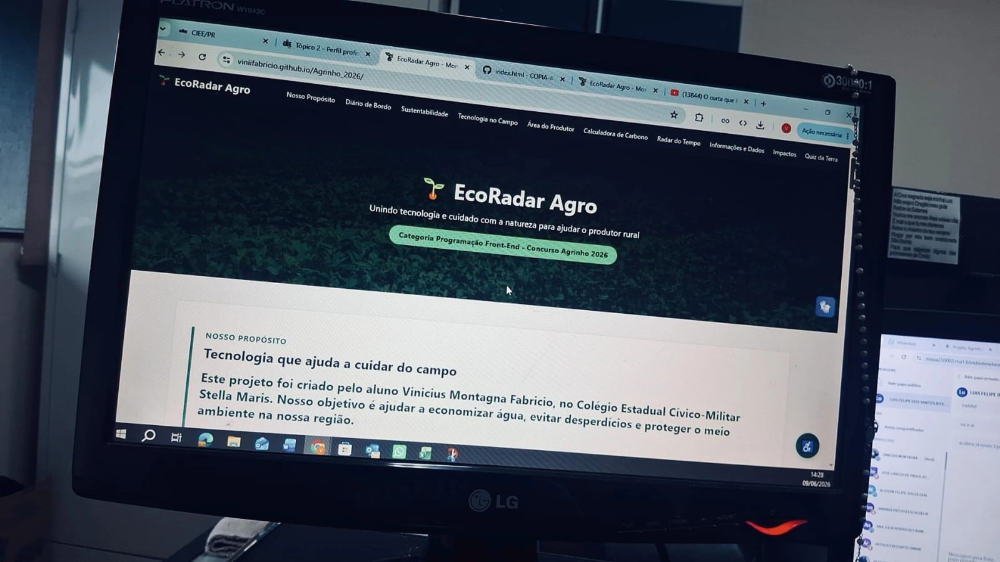
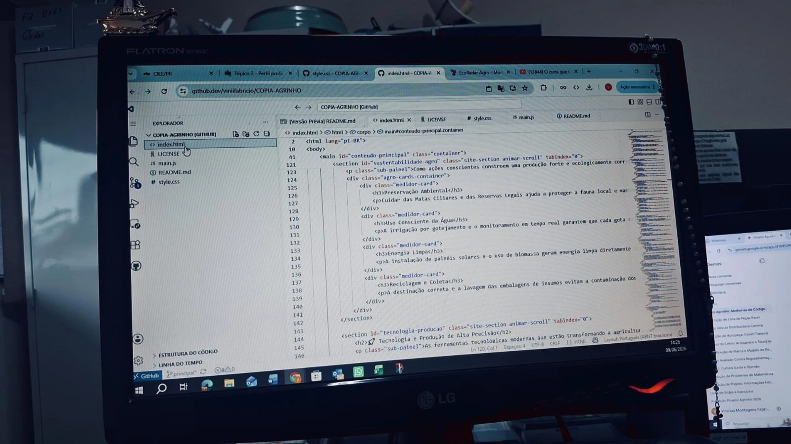
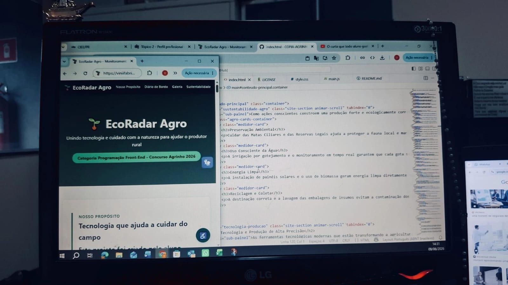

Fase de Pesquisa
Análise de dados da Embrapa e relatórios ecológicos locais em sala de aula.
Unindo tecnologia e cuidado com a natureza para ajudar o produtor rural
Categoria Programação Front-End - Concurso Agrinho 2026Este projeto foi criado pelo aluno Vinicius Montagna Fabricio, no Colégio Estadual Cívico-Militar Stella Maris. Nosso objetivo é ajudar a economizar água, evitar desperdícios e proteger o meio ambiente na nossa região.
O EcoRadar Agro nasceu para resolver problemas reais que os agricultores enfrentam no dia a dia do Norte Pioneiro do Paraná. Com as mudanças no clima, quem trabalha na terra precisa de informações rápidas e certeiras para tomar as melhores decisões.
Mostrando o clima em tempo real e dando dicas de manejo, a plataforma ajuda a evitar que o vento leve o veneno da lavoura para o lugar errado (o que chamamos de deriva) e ensina a usar a água da irrigação na medida certa. Assim, mostramos que a tecnologia pode ser a maior aliada da produção de alimentos e da preservação da natureza.
Veja como foi o envolvimento dos alunos e o desenvolvimento prático do projeto no Colégio Stella Maris.
Junto com meu professor orientador no Colégio Stella Maris, lemos as diretrizes do Concurso Agrinho 2026. Promovemos debates em sala de aula para listar as maiores dificuldades ambientais de Andirá, identificando o desperdício de água e o perigo da deriva na pulverização como pontos críticos da nossa comunidade.
Estudamos pesquisas avançadas da Embrapa e relatórios meteorológicos locais. Conversamos com profissionais do setor para entender como a falta de monitoramento em tempo real prejudicava as pequenas propriedades do Paraná, fundamentando toda a base científica do EcoRadar.
Desenvolvi e programei toda a estrutura do software nativamente. Utilizei HTML5 semântico para garantir acessibilidade universal, CSS3 para criar uma interface moderna e responsiva, e lógica avançada em JavaScript para dar vida aos simuladores ecológicos.
Apresentei o protótipo para colegas e professores. Validamos as regras do Quiz dinâmico e refinamos o robusto Painel Flutuante de Acessibilidade (incluindo correções de quebra de layout, suporte para dislexia e leitores de tela), alinhando o site com as diretrizes do WCAG 2.1.
Registros da pesquisa, desenvolvimento e integração da nossa tecnologia com o ecossistema escolar.

Análise de dados da Embrapa e relatórios ecológicos locais em sala de aula.

Construção de toda a lógica do painel de monitoramento e simuladores em JavaScript.

Testes práticos dos recursos de acessibilidade e calibragem final do Quiz da Terra.
Como ações conscientes constroem uma produção forte e ecologicamente correta.
Cuidar das Matas Ciliares e das Reservas Legais ajuda a proteger a fauna local e mantém o solo protegido contra erosões provocadas pelas chuvas fortes.
A irrigação por gotejamento e o monitoramento em tempo real garantem que cada gota seja usada de forma inteligente, evitando o esgotamento dos rios locais.
A instalação de painéis solares e o uso de biomassa geram energia limpa diretamente nas fazendas, diminuindo a poluição e os custos de produção.
A destinação correta e a lavagem das embalagens de insumos evitam a contaminação dos lençóis freáticos e promovem a economia circular no campo.
As ferramentas tecnológicas modernas que estão transformando a agricultura do Paraná.
Voam sobre as plantações tirando fotos detalhadas para identificar pragas, falhas no plantio e áreas que precisam de adubação sem desperdiçar insumos.
Aparelhos enterrados na lavoura medem a umidade e os nutrientes da terra 24 horas por dia, enviando as informações direto para o celular do produtor.
Sistemas analisam dados do tempo de anos anteriores para prever as melhores datas de plantio e colheita, reduzindo riscos com geadas ou secas.
Tratores guiados por GPS realizam linhas perfeitas de plantio, trabalhando sozinhos dia e noite com economia extrema de combustível.
Clique nos botões abaixo para simular diferentes situações do clima e ver o que o sistema recomenda fazer.
Status: A quantidade de água na terra está boa.
Status: O vento está calmo e seguro.
O clima está ótimo para o trabalho no campo.
Descubra uma estimativa de quanto a sua área preservada consegue ajudar a limpar o ar e gerar benefícios ambientais.
Gás Carbono Retirado do Ar por Ano: 0.00 toneladas.
Créditos de Carbono Gerados: 0.00 créditos.
Valor Financeiro Estimado no Mercado Livre: R$ 0.00
*Conta feita com base nas médias de peso e crescimento de plantas divulgadas pela Embrapa.
Acompanhe a chuva e os ventos ao vivo na região de Andirá - Paraná.
Entenda alguns dados importantes sobre a preservação e a tecnologia no agronegócio.
✨ Passe o mouse ou clique para virar
Dados da Agência Nacional de Águas (ANA) mostram que a irrigação na agricultura gasta bastante água doce. Usar sistemas inteligentes que olham o clima evita desperdícios e pode economizar até 30% de água nas plantações.
✨ Passe o mouse ou clique para virar
Pesquisas da Embrapa provam que cerca de 33% de todo o território brasileiro mapeado é preservado com florestas nativas guardadas e cuidadas pelos próprios produtores rurais dentro de suas terras.
✨ Passe o mouse ou clique para virar
O tema deste ano incentiva a criação de softwares que ajudem a rotina no campo. O agronegócio do Paraná mostra que é totalmente possível produzir alimentos em grande quantidade protegendo e cuidando do meio ambiente.
Como a tecnologia aplicada de forma simples traz benefícios para três pilares fundamentais da nossa região:
| 🏢 Para a Cidade / Sociedade | 🌱 Para o Meio Ambiente | 🚜 Para o Produtor Rural |
|---|---|---|
| Segurança Alimentar: Garante alimentos saudáveis e de qualidade chegando na mesa das cidades sem faltar. | Preservação de Mananciais: Protege os rios e nascentes da nossa região contra gastos exagerados de água. | Corte de Custos: Ajuda a economizar na conta de luz e no uso de insumos, ligando os aparelhos só quando precisa. |
| Economia Forte: Cria empregos e movimenta o comércio das cidades locais que vivem perto do setor rural. | Combate à Deriva: Evita a contaminação do solo e de áreas vizinhas ao suspender aplicações com vento forte. | Decisões Assertivas: Dados precisos na tela do celular, trocando o "gosto do costume" por informações exatas. |
| Educação e Consciência: Une as escolas e quem trabalha no campo nas metas globais de cuidado com o futuro do planeta. | Estímulo ao Mercado Verde: Incentiva a manter florestas em pé ao mostrar como as árvores ajudam a limpar o ar do planeta. | Selo Verde: Valoriza o produto da fazenda, abrindo portas para vender para mercados exigentes do Brasil e do mundo. |
Como nossa plataforma gera resultados reais transformando a comunidade e o mercado.
O uso planejado do EcoRadar Agro cria uma corrente de melhorias conectadas. Quando o produtor rural adota a tecnologia baseada em dados reais, o benefício atravessa as fronteiras da fazenda e chega diretamente no centro urbano das nossas cidades.
Com menos desperdício de insumos nas lavouras, reduz-se drasticamente o risco de poluição ambiental dos rios que abastecem a população urbana de Andirá. Além disso, a estabilidade na produção protege os mercados locais contra surtos de inflação nos preços dos alimentos frescos, impulsionando um comércio regional forte, saudável e ecologicamente certificado.
Responda às questões e teste o que você aprendeu sobre sustentabilidade e tecnologia no campo.
"A agricultura digital não serve apenas para produzir mais, serve para produzir melhor. Unir a tecnologia à preservação da terra é a garantia de que as futuras gerações herdarão um planeta rico, fértil e cheio de vida."